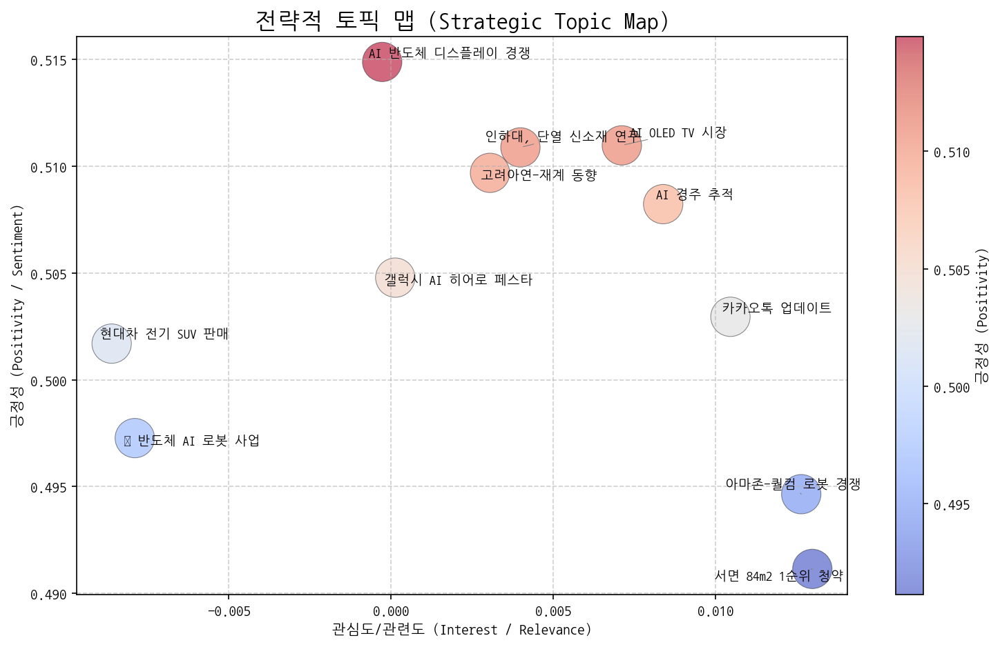
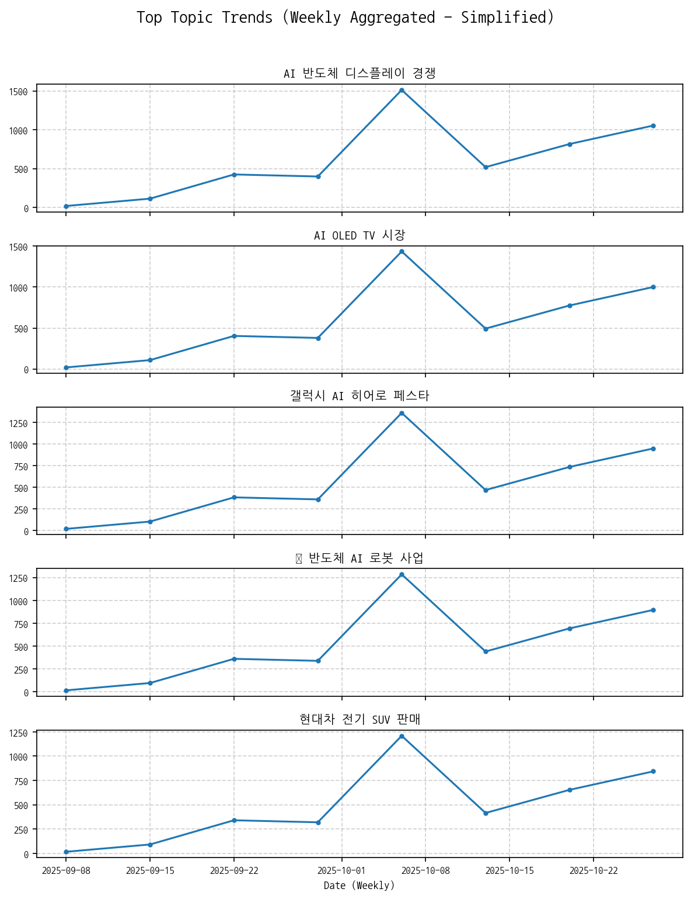
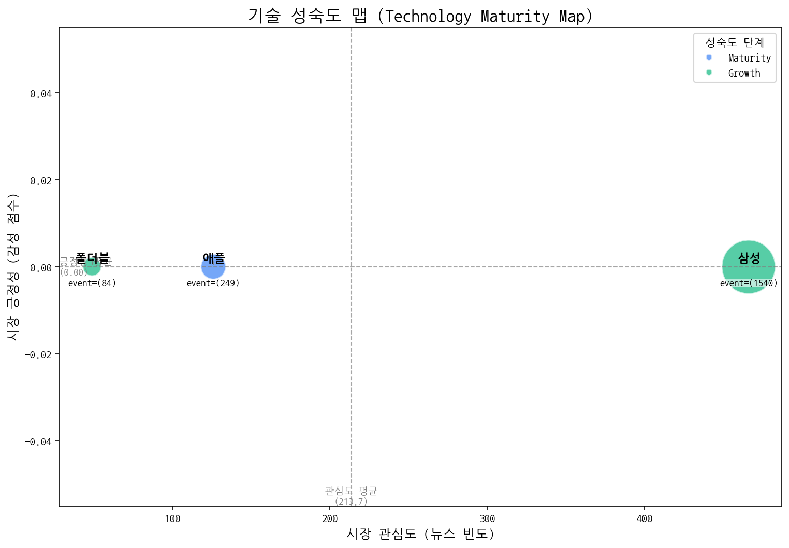
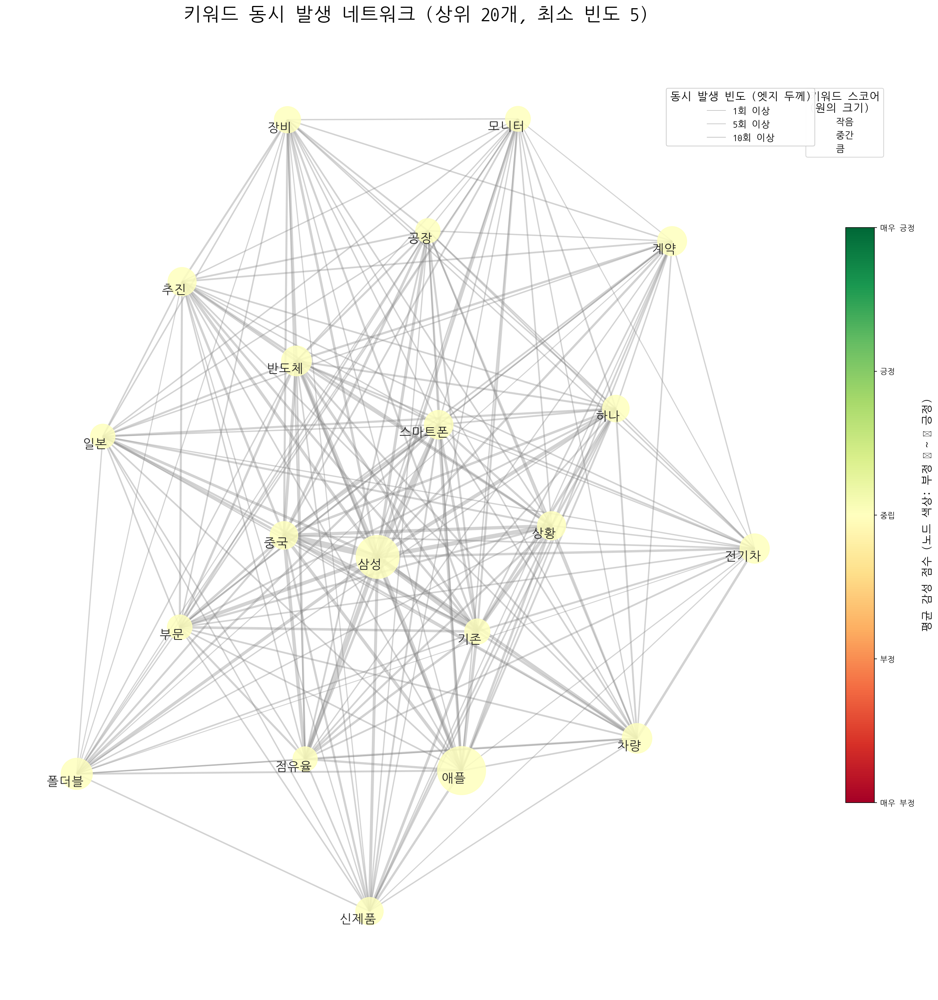
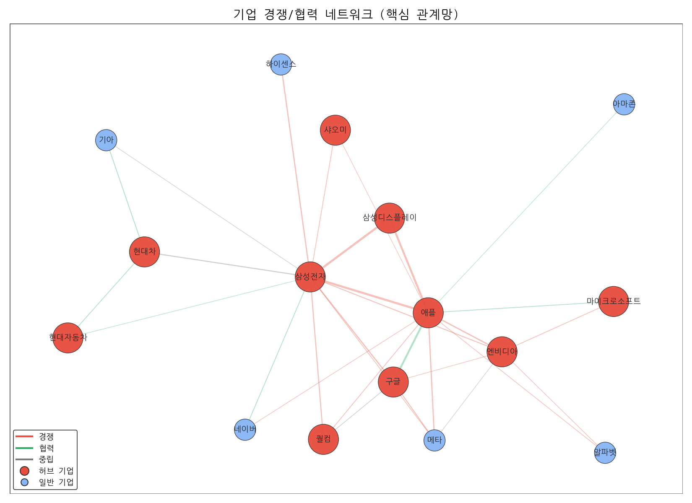
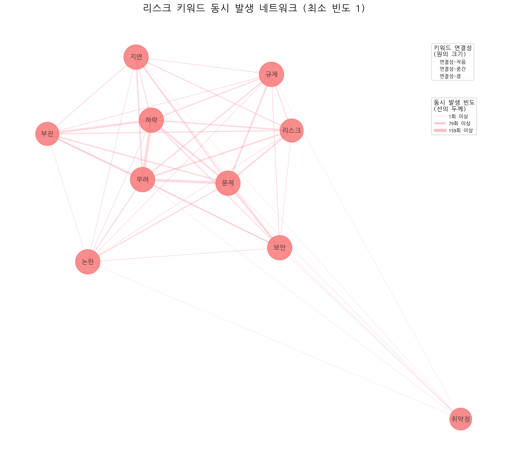
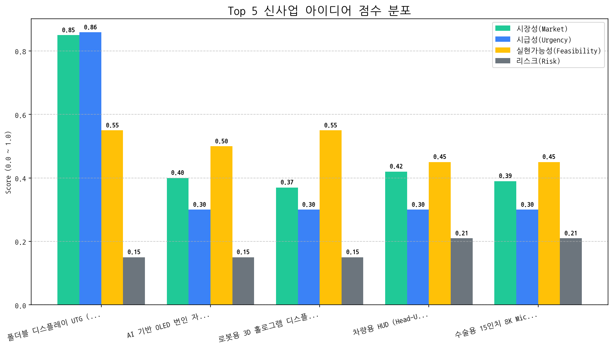

수신: CEO 및 경영진 발신: CSO


※ 주의: 4분면 분석은 데이터가 수치화되지 않은 상태에서 진행되므로, 토픽의 내용과 맥락을 바탕으로 주관적인 판단이 개입될 수 있습니다.
주력 영역 (관심도 높음, 긍정성 높음): 美 반도체 AI 로봇 사업 - 미국을 중심으로 반도체, AI, 로봇 산업이 성장하고 있으며, 시장의 관심과 긍정적 전망이 높으므로, 관련 사업 모델 구축 및 투자 기회 발굴에 집중해야 합니다.
기회 영역 (관심도 낮음, 긍정성 높음): 인하대, 단열 신소재 연구 - 디스플레이 단열 신소재 연구는 아직 시장의 큰 주목을 받지 못하지만, 디스플레이 성능 향상에 필수적인 기술로 발전 가능성이 높습니다.
경쟁/위험 영역 (관심도 높음, 긍정성 낮음): AI 반도체 디스플레이 경쟁 - 미중 기술 패권 경쟁 심화로 인한 불확실성이 존재하며, 경쟁 강도가 높아 기업의 부담이 가중될 수 있습니다.
틈새/장기 영역 (관심도 낮음, 긍정성 낮음):
AI 경주 추적 - 특정 분야에 국한된 기술로, 당장의 수익성은 낮지만 장기적인 기술 발전 가능성을 고려해야 합니다.고려아연-재계 동향 - 기업 내부 이슈 및 정치적 연관성은 시장의 직접적인 관심사는 아니지만, 장기적인 기업 이미지에 영향을 줄 수 있습니다.서면 84m2 1순위 청약 - 특정 지역 부동산 시장에 한정된 이슈로, 제한적인 정보만을 제공합니다.카카오톡 업데이트 - 일상적인 앱 업데이트 소식으로, 기술적 혁신이나 시장에 미치는 영향은 제한적입니다.[선정된 '기회' 토픽명]: 인하대, 단열 신소재 연구: 머크와 인하대의 협력 연구를 통해 개발되는 디스플레이 단열 신소재 기술의 잠재력을 파악하기 위해, 해당 연구팀과의 기술 미팅을 추진하고, 관련 특허 동향을 분석하여 미래 시장 경쟁력 확보 가능성을 평가해야 합니다.
[선정된 '위험' 토픽명]: AI 반도체 디스플레이 경쟁: 미중 기술 패권 경쟁 심화에 따른 불확실성을 최소화하기 위해, 삼성전자의 AI 반도체 및 디스플레이 기술 전략 변화를 면밀히 모니터링하고, 경쟁 심화에 따른 공급망 리스크 및 규제 변화 가능성에 대비한 시나리오별 대응 전략을 수립해야 합니다.
| 토픽 | 요약 | 핵심 키워드 |
|---|---|---|
| AI 반도체 디스플레이 경쟁 | AI 기술 발전을 위한 반도체와 OLED 디스플레이 기술 경쟁 심화, 특히 미중 기술 패권 경쟁 속 삼성전자의 핵심 기술 전략 관련 뉴스. | ai, oled, 중국 |
| AI OLED TV 시장 | LG와 삼성전자를 중심으로 OLED, AI, RGB 기술이 적용된 TV 디스플레이 시장 경쟁 심화 및 중국의 추격, 특히 시니어를 위한 기술 발전 동향을 다룸. | oled, ai, tv |
| 갤럭시 AI 히어로 페스타 | 삼성전자가 갤럭시 AI 시리즈를 대상으로 히어로 페스타 할인 행사를 진행하여 다양한 혜택을 제공하는 내용입니다. | 갤럭시, 할인, 히어로 |
| 美 반도체 AI 로봇 사업 | 미국에서 반도체, AI, 로봇, 배터리 부품 등 첨단 기술 사업이 핵심 경쟁력으로 부상하고 있으며, 관련 사업의 성장 가능성이 높음을 시사합니다. | 반도체, 미국, ai |
| 현대차 전기 SUV 판매 | 현대차 전기 SUV 모델 판매와, 전기차의 주행 및 자원순환 관련 내용, 그리고 포르쉐와의 비교 분석 등을 다루는 뉴스 기사. | 주행, 자원순환, suv |
| 인하대, 단열 신소재 연구 | 인하대 신소재공학과 교수 연구팀이 머크와 협력하여 디스플레이 단열에 사용될 새로운 imid 소재를 연구하고, 학생들도 참여하고 있다는 내용입니다. | 디스플레이, 학생은, 머크 |
| 고려아연-재계 동향 | 고려아연 최창걸 명예회장 관련, 한화/GS그룹 등 재계 동향 및 국민의힘 인사를 포함한 정치권 연관성에 대한 분석. 비철금속 사업 관련 논의 가능성도 포함. | 부회장, 명예회장, 비철금속 |
| 서면 84m2 1순위 청약 | 부산 서면의 84m2 아파트 단지 청약이 1순위로 최고 경쟁률을 기록할 것으로 예상되며, 해당 단지는 부산광역시 2호선 인근에 위치하고 전용면적을 갖춘 것이 특징입니다. | 서면, 청약, 1순위 |
| 아마존-퀄컴 로봇 경쟁 | 아마존과 퀄컴이 로봇 기술, 특히 배송 로봇 및 로보틱스 하드웨어 개발 경쟁을 벌이고 있으며, 퀄컴은 개발자들을 위한 관련 플랫폼을 제공하는 것으로 보입니다. | 아마존은, 퀄컴은, 로봇 |
| AI 경주 추적 | AI 비전 기술을 활용하여 경주 장면에서 말의 움직임을 추적하고 화면에 표시하는 기술에 대한 내용입니다. | race, vision, 말을 |
| 카카오톡 업데이트 | 카카오톡의 새로운 업데이트 관련 소식 및 이용자 관련 정보. | 카카오, 카카오톡, 카카오는 |
| topic_id | topic_name | momentum_score |
|---|---|---|
| 2 | 갤럭시 AI 히어로 페스타 | 0.635 |
| 0 | AI 반도체 디스플레이 경쟁 | 0.422 |
| 1 | AI OLED TV 시장 | 0.422 |
| 4 | 현대차 전기 SUV 판매 | 0.19 |
| 3 | 美 반도체 AI 로봇 사업 | 0 |
| 5 | 인하대, 단열 신소재 연구 | 0 |
| 6 | 고려아연-재계 동향 | 0 |
| 7 | 서면 84m2 1순위 청약 | 0 |
| 8 | 아마존-퀄컴 로봇 경쟁 | 0 |
| 9 | AI 경주 추적 | 0 |
| 10 | 카카오톡 업데이트 | 0 |

| 기술 | 단계 | 판단 근거 | |:-----|:---------|:--------------------------------------------------------------------------------------| | 애플 | Maturity | 높은 출시 빈도와 낮은 시장 감성 점수는 애플 기술이 성숙기에 접어들어 혁신보다는 안정적인 제품 라인업 유지에 집중하고 있음을 시사합니다. | | 폴더블 | Growth | 출시 건수가 투자 및 수주 건수를 압도적으로 상회하며 뉴스 언급 빈도 또한 높아 시장 관심도가 상승하는 성장 단계로 판단됩니다. | | 삼성 | Growth | 높은 출시 빈도와 투자 건수는 삼성 기술이 시장에서 성장 단계에 있음을 시사하지만, 낮은 시장 감성 점수는 시장의 반응이 긍정적이지만은 않음을 나타낸다. || 기업 | 핵심 집중 토픽 | 전략 방향성 해석 |
|---|---|---|
| 삼성전자 | AI 반도체 디스플레이 경쟁, AI OLED TV 시장, 美 반도체 AI 로봇 사업 | 삼성전자는 AI 반도체 경쟁력을 기반으로 디스플레이 기술 우위를 활용, AI OLED TV 시장을 선점하고, 미국 내 반도체-AI-로봇 사업 시너지를 통해 미래 기술 혁신을 주도하며, AI 역량 강화를 핵심 전략으로 삼고 있습니다. |
| 애플 | AI 반도체 디스플레이 경쟁, AI OLED TV 시장, 美 반도체 AI 로봇 사업 | 애플은 AI 반도체 경쟁력 강화를 통해 자사 AI 생태계를 구축하고, 디스플레이 기술 우위를 활용하여 프리미엄 AI OLED TV 시장을 선점하며, 미국 내 반도체, AI, 로봇 사업 투자를 통해 AI 기반 하드웨어 경쟁력을 확보하려는 단기 전략을 추진 중입니다. |
| 삼성디스플레이 | AI 반도체 디스플레이 경쟁, AI OLED TV 시장, 美 반도체 AI 로봇 사업 | 삼성디스플레이는 AI 반도체 기술을 디스플레이에 접목하여 경쟁력을 강화하고, AI OLED TV 시장을 선점하는 동시에 미국 시장에서 반도체 AI 로봇 사업을 통해 새로운 성장 동력을 확보하려는 전략을 추진하고 있습니다. 즉, AI 기술을 활용한 디스플레이 혁신과 신규 사업 확장을 통해 미래 시장을 주도하려는 것으로 판단됩니다. |


| 주요 관계 | 유형 | 액션 아이템 제안 |
|---|---|---|
| 삼성전자 ↔ 애플 | rivalry | 애플 신제품 출시 전략 분석, 차별화 포인트 발굴. |
| 삼성디스플레이 ↔ 삼성전자 | rivalry | 차세대 디스플레이 기술 동향 및 삼성전자 니즈 심층 분석 |
| 삼성디스플레이 ↔ 애플 | rivalry | 애플 OLED 기술 내재화 대비, 차세대 디스플레이 기술 확보. |
두 기업이 함께 언급된 문맥 안에서, 키워드의 빈도가 경쟁 > 협력인 경우 'rivalry', 반대의 경우 'partnership'으로 분류

| 아이디어 | 가치 제안 | 총점 |
|---|---|---|
| 폴더블 디스플레이 UTG (Ultra-Thin Glass) 코팅 공정 개선을 위한 AI 기반 실시간 품질 검사 시스템 | AI 기반 실시간 UTG 코팅 품질 검사 자동화, 미세 결함 검출률 향상 및 불량률 감소, 공정 데이터 분석을 통한 코팅 공정 최적화 | 6.6 |
| AI 기반 OLED 번인 자동 보정 기술 및 서비스 | AI 기반 실시간 번인 예측 및 자동 보정, 디스플레이 수명 연장 및 사용자 만족도 향상, 기존 OLED 패널에 소프트웨어 방식으로 적용 가능 | 3.3 |
| 로봇용 3D 홀로그램 디스플레이 모듈 | 3D 홀로그램 이미지 제공으로 로봇의 공간 인식 능력 향상, 사용자에게 직관적인 정보 제공 및 인터랙션 가능, 소형/경량화된 모듈 디자인 | 3.3 |
| 차량용 HUD (Head-Up Display) 증강현실(AR) 글래스 일체형 솔루션 | 운전자 시야에 최적화된 AR 정보 제공, 글래스 일체형 디자인으로 편의성 극대화, 저전력/고휘도 OLED 기술 적용으로 에너지 효율 향상 및 선명한 화질 제공 | 3.1 |
| 수술용 15인치 8K MicroLED 디스플레이 | 8K 초고해상도 및 높은 색 재현율로 수술 시 정확한 시각 정보 제공, MicroLED 기술 적용으로 뛰어난 명암비 및 수명 보장, 의료 영상 표준(DICOM) 지원 | 3 |

#### [아이디어 검증: 2주 Action Plan] | Hypothesis | Target | KPI | Owner | Due | |:------------------------------------------------------------------------------------------------------------|:--------------------------------------------------------------------------|:-----------------------------------------------------------------------------------------------|:--------|:-----------| | UTG 코팅 전문 기업 및 폴더블 디스플레이 제조사들은 기존 품질 검사 방식의 비효율성에 대한 불만을 가지고 있으며, AI 기반 실시간 품질 검사 시스템 도입에 대한 니즈가 존재한다. | UTG 코팅 전문 기업 5곳의 기술 담당자 인터뷰, 폴더블 디스플레이 제조사 3곳의 품질 관리 담당자 인터뷰 | 인터뷰 대상 8곳 중 6곳 이상이 AI 기반 실시간 품질 검사 시스템 도입에 긍정적인 반응을 보이거나, 구체적인 도입 검토 의사를 밝힘. | 사업개발팀 | 2025-11-06 | | 개발될 AI 기반 실시간 품질 검사 시스템이 기존 검사 방식 대비 UTG 코팅의 미세 결함 검출률을 15% 이상 향상시키고, 불량률을 5% 이상 감소시킬 수 있다. | 사내 UTG 코팅 샘플 데이터셋을 활용한 AI 모델 성능 테스트 및 시뮬레이션, 기존 검사 시스템과의 비교 분석 | AI 모델 성능 테스트 결과, 미세 결함 검출률 15% 이상 향상, 불량률 5% 이상 감소를 입증하는 데이터 확보 | 기술기획팀 | 2025-11-06 | | AI 기반 실시간 품질 검사 시스템 도입 시 UTG 코팅 공정의 데이터 분석을 통해 코팅 공정 최적화 및 생산 비용 절감 효과를 얻을 수 있으며, 이는 고객사의 경쟁력 강화에 기여할 수 있다. | UTG 코팅 공정 전문가 3인 인터뷰를 통한 데이터 분석 가능성 및 최적화 효과 검토, 잠재 고객사 대상 비용 절감 효과 시뮬레이션 | 전문가 인터뷰 결과, 데이터 분석을 통한 공정 최적화 가능성을 확인하고, 잠재 고객사 대상 시뮬레이션 결과, 연간 1억원 이상의 비용 절감 효과를 입증하는 데이터 확보. | 마케팅팀 | 2025-11-06 |